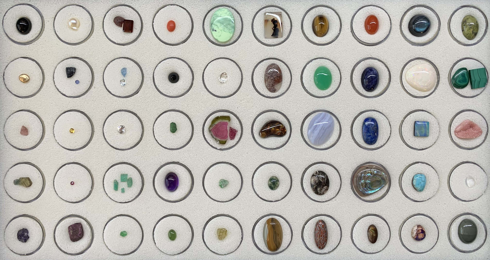

Gems

Black Jade
- Jade is an umbrella term for two different types of decorative rocks used for jewelry or ornaments. Jade is often referred to by either of two different silicate mineral names: nephrite (a silicate of calcium and magnesium in the amphibole group of minerals), or jadeite (a silicate of sodium and aluminum in the pyroxene group of minerals).
Gold
- Gold is a chemical element; it has symbol Au (from Latin aurum) and atomic number 79. In its pure form, it is a bright, slightly orange-yellow, dense, soft, malleable, and ductile metal.
Malaya Garnet
- Malaia garnet or Malaya garnet is a gemological varietal name for light to dark slightly pinkish orange, reddish orange, or yellowish orange garnet, that are of a mixture within the pyralspite series pyrope, almandine, and spessartine with a little calcium. The name Malaia is translated from Swahili to mean, prostitute. It is found in east Africa, in the Umba Valley bordering Tanzania and Kenya.
Tanzanite (Uncooked)
- Tanzanite is the blue and violet variety of the mineral zoisite (a calcium aluminium hydroxyl sorosilicate), caused by small amounts of vanadium. Tanzanite belongs to the epidote mineral group. Tanzanite is only found in Simanjiro District of Manyara Region in Tanzania.
Tanzanite (Cooked)
- See above, tanzanite forms as a brownish crystal and is trichroic, which means it shows three colours – brown, blue and violet – concurrently. Heating, either underground naturally by metamorphic processes, or artificially, removes the brown or burgundy colour component to produce a stronger violet-blue color and makes the stone "dichroic", which means it only reflects blue and violet..
Pearl
- A pearl is a hard, glistening object produced within the soft tissue (specifically the mantle) of a living shelled mollusk or another animal, such as fossil conulariids. Just like the shell of a mollusk, a pearl is composed of calcium carbonate (mainly aragonite or a mixture of aragonite and calcite) in minute crystalline form, which has deposited in concentric layers.
Sapphire
- Sapphire is a precious gemstone, a variety of the mineral corundum, consisting of aluminium oxide with trace amounts of elements such as iron, titanium, cobalt, lead, chromium, vanadium, magnesium, boron, and silicon. The name sapphire is derived from the Greek word for lapis lazuli.
Topaz
- Topaz is a silicate mineral made of aluminum and fluorine. It is used as a gemstone in jewelry and other adornments. Common topaz in its natural state is colorless, though trace element impurities can make it pale blue or golden brown to yellow-orange. Topaz is often treated with heat or radiation to make it a deep blue, reddish-orange, pale green, pink, or purple.
Ruby
- Ruby is a pinkish red to blood-red colored gemstone, a variety of the mineral corundum (aluminium oxide). The color is due to the element chromium.
Ruby
- Ruby is a pinkish red to blood-red colored gemstone, a variety of the mineral corundum (aluminium oxide). The color is due to the element chromium.
Garnet
- Garnets are a group of silicate minerals that have been used since the Bronze Age as gemstones and abrasives.
Aquamarine
- Aquamarine is a pale-blue to light-green variety of the beryl family, with its name relating to water and sea.
Diamond
- ADiamond is a solid form of the element carbon with its atoms arranged in a crystal structure called diamond cubic.
Emeralds
- Emerald is a gemstone and a variety of the mineral beryl colored green by trace amounts of chromium or sometimes vanadium.
Chrysoprase
- Chrysoprase, chrysophrase or chrysoprasus is a gemstone variety of chalcedony (a cryptocrystalline form of silica) that contains small quantities of nickel. Its color is normally apple-green, but varies from turquoise-like cyan to deep green. The darker varieties of chrysoprase are also referred to as prase.
Coral
- A variety.
Jet
- A variety.
Chrome Tourmaline
- A variety.
Amethyst
- A variety.
Jade
- A variety.
Agate
- A variety.
Herkmer 'Diamond' Quartz
- A variety.
Watermelon Tourmaline
- A variety.
Tsavorite
- A variety.
Sphene
- A variety.
Picture Agate
- A variety.
Picture Agate
- A variety.
Fire Agate
- A variety.
Moss Agate
- A variety.
Blue Lace Agate
- A variety.
Tiger Eye
- A variety.
Chrysoprase
- Chrysoprase, chrysophrase or chrysoprasus is a gemstone variety of chalcedony (a cryptocrystalline form of silica) that contains small quantities of nickel. Its color is normally apple-green, but varies from turquoise-like cyan to deep green. The darker varieties of chrysoprase are also referred to as prase.
Moonstone
- A variety.
Polished Fossils
- A variety.
Dinosaur Bone
- Gembone, also known as agatized dinosaur bone, is a unique and rare form of fossilized dinosaur bone that has been transformed into colorful and durable gemstone material through a process of mineral replacement.
Carnelian
- A variety.
Sodalite
- A variety.
Lapis Lazuli
- A variety.
Abalone Shell
- A variety.
??
- A variety.
Labradorite
- A variety.
Opal
- A variety.
Opal
- A variety.
Turquoise
- A variety.
Shaktokite
- A variety.
Unakite
- A variety.
Malachite
- A variety.
Pink Druzy?
- Druzy (also spelled druse or drusy) is sets of tiny crystals of minerals that form on the surface of another stone. These crystal intergrowths or clusters can be formed by many different minerals.
??
- A variety.
Green Jasper
- A variety.